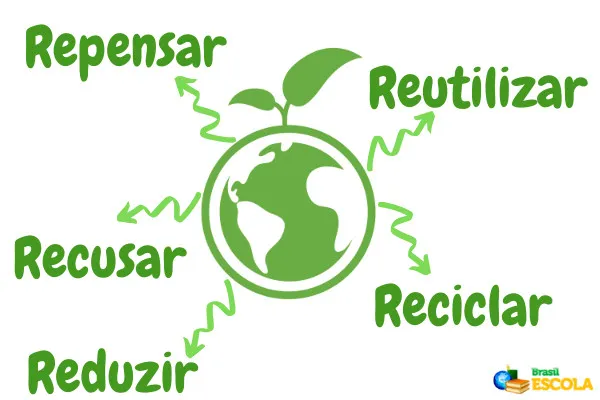

O que significa “5Rs”?
Os 5Rs nada mais são do que um estilo de vida sustentável aderido para a diminuição da geração de resíduos no planeta Terra.
E estes estilos de vida são divididos em 5 formas de ajudar o meio ambiente, sendo eles o ato de:

O que são cada um dos 5Rs?